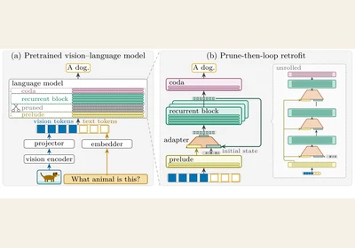
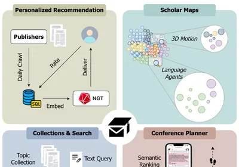
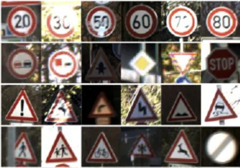

Retrofitting Recurrent Vision–Language Models from Pretrained Backbones
arXiv 2026 · under review
PhD Student · University of Tübingen

I am a PhD student in the Computer Vision and Multimodal Learning (CVML) group at the University of Tübingen and the Tübingen AI Center, advised by Prof. Dr. Hilde Kuehne and co-supervised by Prof. Dr. Andreas Geiger. I am also part of the fabulous Scholar Inbox project, where I now serve as an advisor.
Previously, I was a research engineer in the Autonomous Vision Group (AVG), working on Scholar Inbox. I hold an M.Sc. in Machine Learning from the University of Tübingen.
Research interests Looped models · Multimodal learning · Representation learning

arXiv 2026 · under review

ACL 2025 · System Demonstrations
@inproceedings{flicke2025scholar,
title = {Scholar Inbox: Personalized Paper Recommendations for Scientists},
author = {Flicke, Markus and Angrabeit, Glenn and Iyengar, Madhav and Protsenko, Vitalii and Shakun, Illia and Cicvaric, Jovan and Kargi, Bora and He, Haoyu and Schuler, Lukas and Scholz, Lewin and Agnihotri, Kavyanjali and Cao, Yong and Geiger, Andreas},
booktitle = {Proceedings of the 63rd Annual Meeting of the Association for Computational Linguistics (Volume 3: System Demonstrations)},
pages = {307--317},
year = {2025},
address = {Vienna, Austria},
publisher = {Association for Computational Linguistics},
doi = {10.18653/v1/2025.acl-demo.30},
url = {https://aclanthology.org/2025.acl-demo.30/}
}
OAGM/ARW Joint Workshop 2019
@inproceedings{iyengar2019detecting,
title = {Detecting Out-of-Distribution Traffic Signs},
author = {Iyengar, Madhav and Opitz, Michael and Bischof, Horst},
booktitle = {Proceedings of the Joint Austrian Computer Vision and Robotics Workshop (ARW \& OAGM)},
year = {2019}
}